Attaching package: 'dplyr'The following objects are masked from 'package:stats':
filter, lagThe following objects are masked from 'package:base':
intersect, setdiff, setequal, unionLoading required package: ggplot2
Attaching package: 'dplyr'The following objects are masked from 'package:stats':
filter, lagThe following objects are masked from 'package:base':
intersect, setdiff, setequal, unionLoading required package: ggplot2I, and many other statisticians, do not recommend this approach.
However, the concept is widespread and we need to discuss it
Even if you’re not very familiar with what it means precisely, I’m sure you’ve come across “statistical” significance in at least one scientific context.
“Statistical significance” is a decision rule used by some scientists to consider whether a result is “stable” or “real”
I and many other statisticians do not recommend this approach, and we’ll see why
Statistical significance is conventionally defined as a threshold (commonly, a \(p\)-value less than 0.05) relative to some null hypothesis or prespecified value that indicates no effect is present.
E.g., an estimate may be considered “statistically significant at \(P < 0.05\)” if it:
More generally, an estimate is “not statistically significant” if, e.g.
The way you’re likely to see statistical significance presented is that some threshold - usually a p-value of less than 0.05 - is applied in a statistical test, relative to some null hypothesis or prespecified value that indicates the absence of an effect
So you are likely to see an estimate be considered “statistically significant at P<0.05” if it lies at least two SEs from the mean, or is a difference that lies at least two SEs from zero
Conversely, you will see estimates be considered “not statistically significant at P<0.05” if they lie less than two SEs from the mean, or the observed value can reasonably be explained by chance variation alone
As you might have guessed from the talk of standard errors and distances from means, we map our measured values in the real world to statistical probability distributions to calculate these values.
normal_distplot(mu=0, sd=1)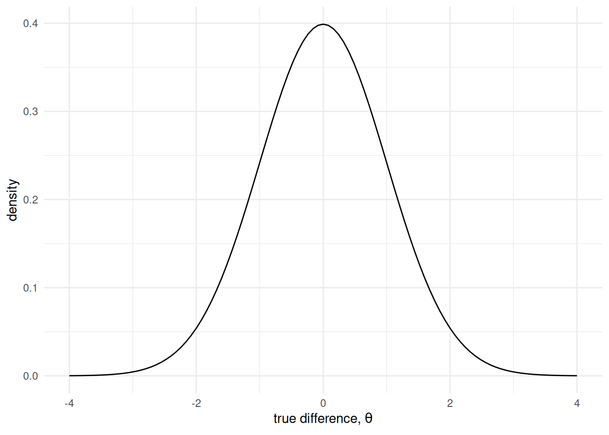
normal_distplot(mu=0, sd=1) +
add_x_marker(-1.7, 0.3, "estimate = -1.7", "darkorange1", "darkorange3")Warning: Using `size` aesthetic for lines was deprecated in ggplot2 3.4.0.
ℹ Please use `linewidth` instead.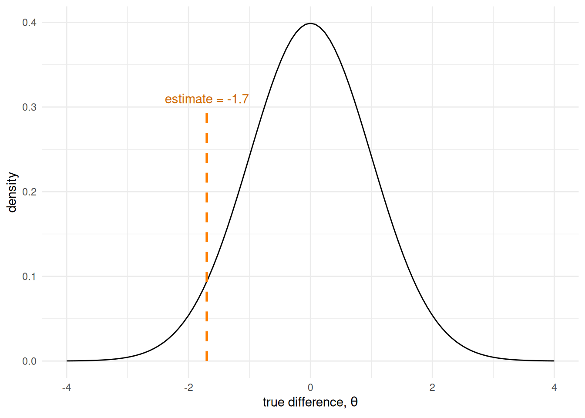
Suppose that we measured the post treatment levels in each group, and found the difference between the means to be -1.4 units
Is that unlikely, given the null hypothesis?
Well, we don’t know if it’s unlikely because we haven’t decided what “unlikely” means
normal_distplot(mu=0, sd=1) +
shade_normal(mu=0, sd=1, zstart=0.05, zend=0.95) +
ci_normal(mu=0, sd=1, ci=0.90)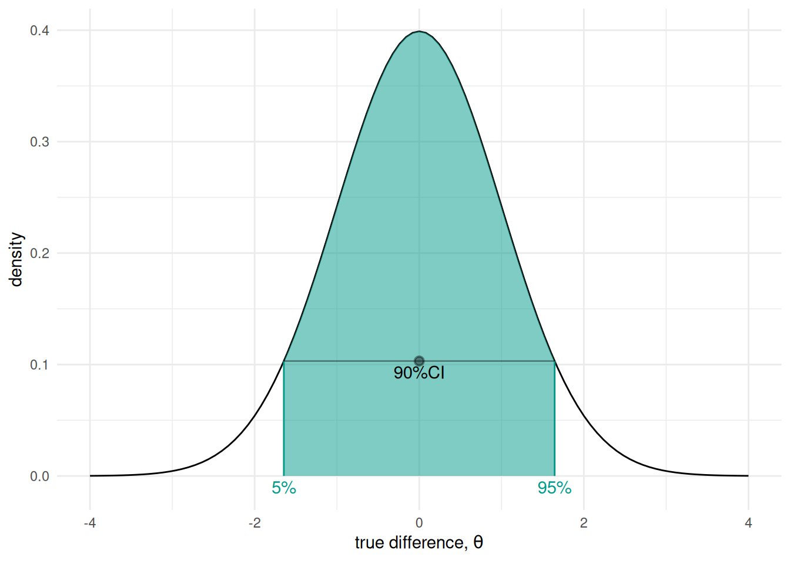
normal_distplot(mu=0, sd=1) +
shade_normal(mu=0, sd=1, zstart=0.05, zend=0.95) +
ci_normal(mu=0, sd=1, ci=0.90) +
add_x_marker(-1.7, 0.3, "estimate = -1.7", "darkorange1", "darkorange3")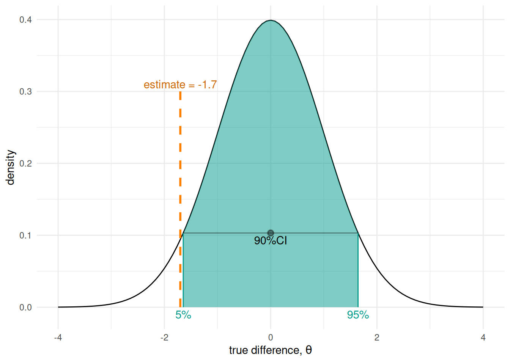
normal_distplot(mu=0, sd=1) +
shade_normal(mu=0, sd=1, zstart=0.025, zend=0.975) +
ci_normal(mu=0, sd=1, ci=0.90) +
ci_normal(mu=0, sd=1, ci=0.95)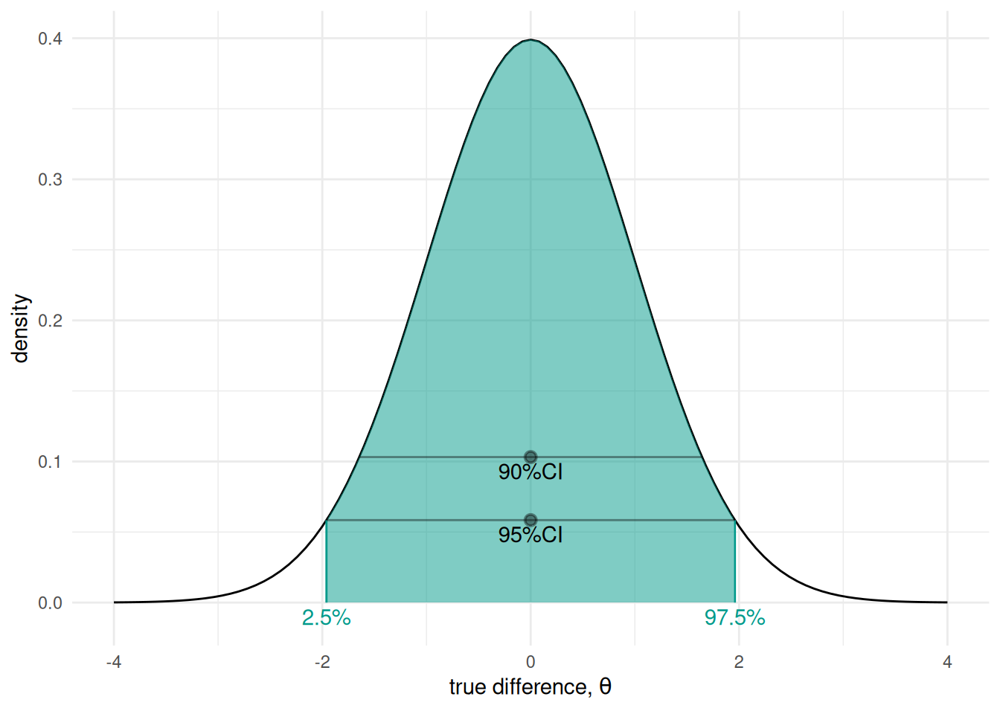
normal_distplot(mu=0, sd=1) +
shade_normal(mu=0, sd=1, zstart=0.025, zend=0.975) +
ci_normal(mu=0, sd=1, ci=0.95) +
add_x_marker(-1.7, 0.3, "estimate = -1.7", "purple", "purple")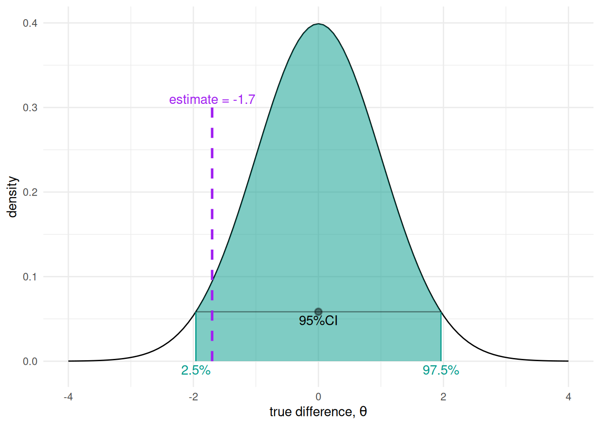
normal_distplot(mu=0, sd=1) +
shade_normal(mu=0, sd=1, zstart=0.025, zend=0.975) +
ci_normal(mu=0, sd=1, ci=0.95) +
add_x_marker(-2.1, 0.35, "estimate = -2.1, significant", "darkorange1", "darkorange3") +
add_x_marker(-1.7, 0.3, "estimate = -1.7, not significant", "purple", "purple") +
add_x_marker(1.2, 0.3, "estimate = 1.2, not significant", "purple", "purple") +
add_x_marker(3, 0.35, "estimate = 3, significant", "darkorange1", "darkorange3")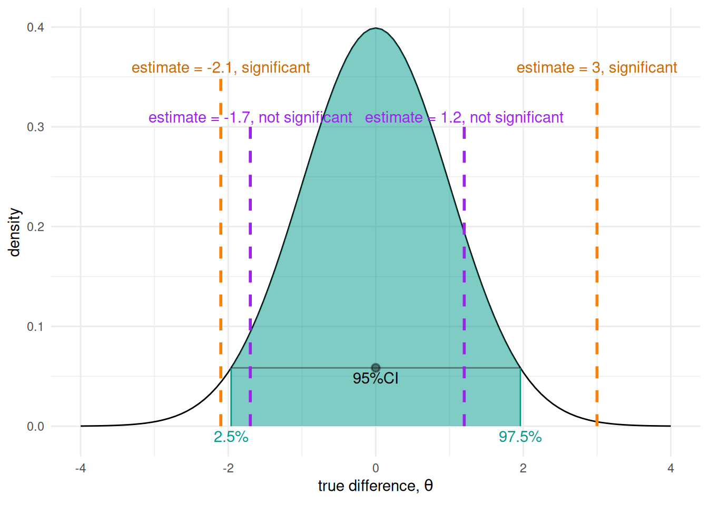
normal_distplot(mu=0, sd=1) +
shade_normal(mu=0, sd=1, zstart=0.05, zend=1) +
add_x_marker(-2.1, 0.35, "estimate = -2.1, significant", "purple", "purple") +
add_x_marker(-1.7, 0.3, "estimate = -1.7, significant", "purple", "purple") +
add_x_marker(1.2, 0.3, "estimate = 1.2, not significant", "darkorange1", "darkorange3") +
add_x_marker(3, 0.35, "estimate = 3, not significant", "darkorange1", "darkorange3")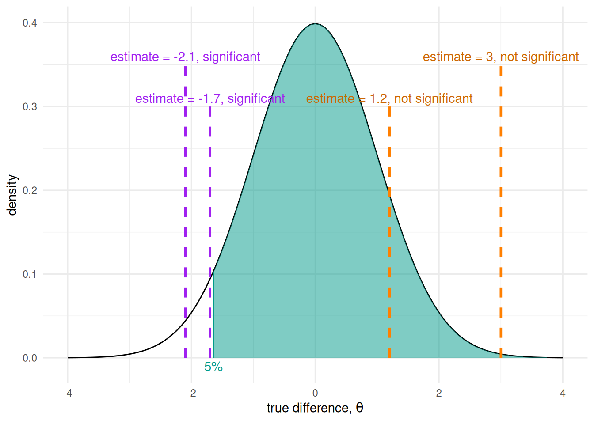
When we know we want to test for change in a specific direction, we should use a one-tailed test
When checking specifically for a negative change where \(P < 0.05\), say that \(T\) reduces cholesterol level by more than \(C\), we would use a left-tailed test
This means that we’re concerned with whether the estimate lies outside the right-most 95% of the distribution mass
normal_distplot(mu=0, sd=1) +
shade_normal(mu=0, sd=1, zstart=0, zend=0.95) +
add_x_marker(-2.1, 0.35, "estimate = -2.1, not significant", "darkorange1", "darkorange3") +
add_x_marker(-1.7, 0.3, "estimate = -1.7, not significant", "darkorange1", "darkorange3") +
add_x_marker(1.2, 0.3, "estimate = 1.2, not significant", "darkorange1", "darkorange3") +
add_x_marker(3, 0.35, "estimate = 3, significant", "purple", "purple")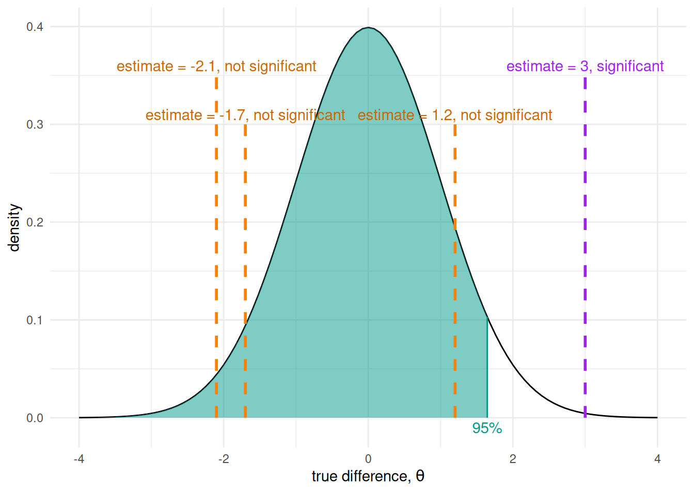
Similarly, if checking specifically for a postitive change where \(P < 0.05\), say that \(C\) reduces cholesterol level by more than \(T\), we would use a left-tailed test
This means that we’re concerned with whether the estimate lies outside the left-most 95% of the distribution mass
It’s possible to dishonestly switch a result between “significant” and “not significant” by choosing to use a one-tailed or two-tailed test
It is a common error to summarise comparisons by statistical significance into “significant” and “non-significant” results
It is a common error to summarise comparisons by statistical significance into “significant” and “non-significant” results
ggplot() +
shaded_normal(10, 10, 0.1, 1, fill="orange", color="darkorange3", label="mean=10, sd=10", textoffset=0.001) +
shaded_normal(25, 10, 0.01, 1, fill="purple", color="purple", label="mean=25, sd=10", textoffset=0.001) +
annotate("segment", colour="black", lty="dashed", x=0, xend=0, y=0, yend=0.05) +
xlim(-20, 60) +
ylim(-0.001, 0.05) +
xlab("effect estimate") +
ylab("density") +
theme_minimal()Warning: Removed 500 rows containing non-finite outside the scale range
(`stat_align()`).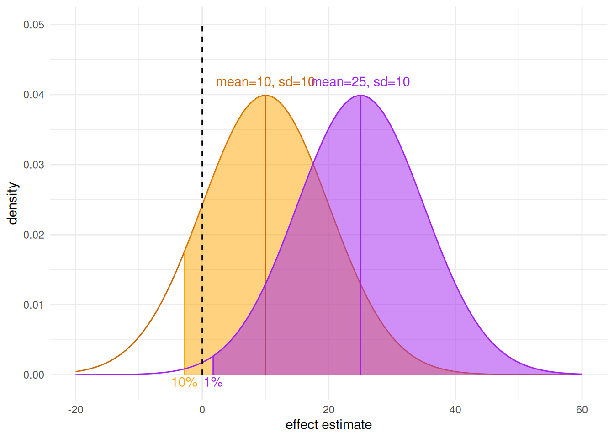
ggplot() +
shaded_normal(10, 10, 0.025, 0.975, fill="orange", color="darkorange3", label="mean=10, sd=10", textoffset=0.001) +
shaded_normal(25, 10, 0.025, 0.975, fill="purple", color="purple", label="mean=25, sd=10", textoffset=0.001) +
annotate("segment", colour="black", lty="dashed", x=0, xend=0, y=0, yend=0.05) +
xlim(-20, 60) +
ylim(-0.001, 0.05) +
xlab("effect estimate") +
ylab("density") +
theme_minimal()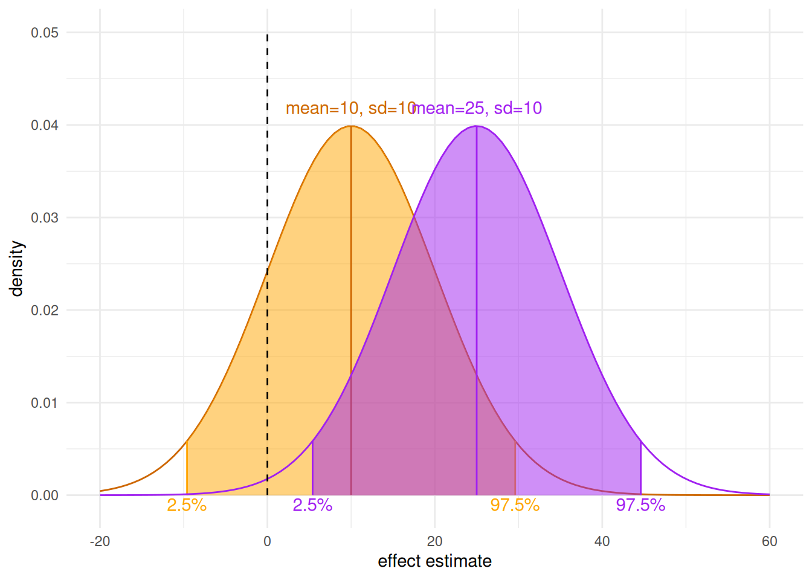
\(C\) for control, the current best-in class; \(T\) for treatment, the new compound↩︎